136
Page 40

Page 41

8
നാണയക്കിലുക്കം
137
Page 42
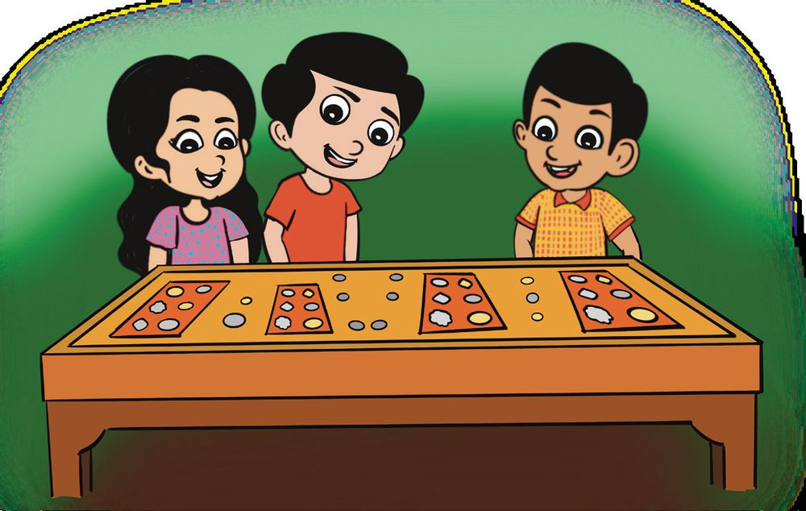
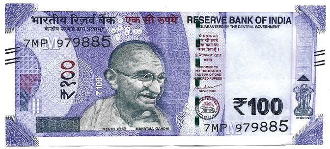
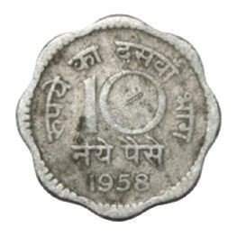
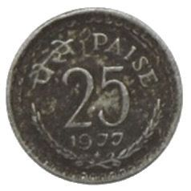
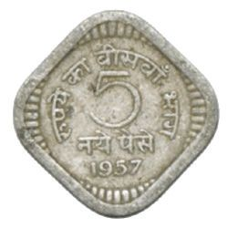
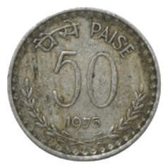
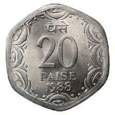


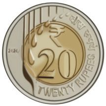

നാണയ പ്രദർശനം
അനുവും ജിത്തുവും ഗ്രാമോോത്സവം കാണാൻ പോോയി. അവർ നാണയ പ്രദർശനം നടക്കുന്ന സ്റ്റാളിലെത്തി. നിങ്ങൾക്ക് അറിയാവുന്ന നാണയങ്ങൾക്ക് വട്ടമിടൂ.
50 രൂപ നോോട്ടിനും 100 രൂപ നോോട്ടിനും ഒരേ
വലുപ്പമാണോോ? ചേർത്തുവച്ച് പരിശോോധിക്കൂ. മറ്റ് നോോട്ടുകളുംം ചേർത്തുവച്ചു നോോക്കൂ.
138
Page 43
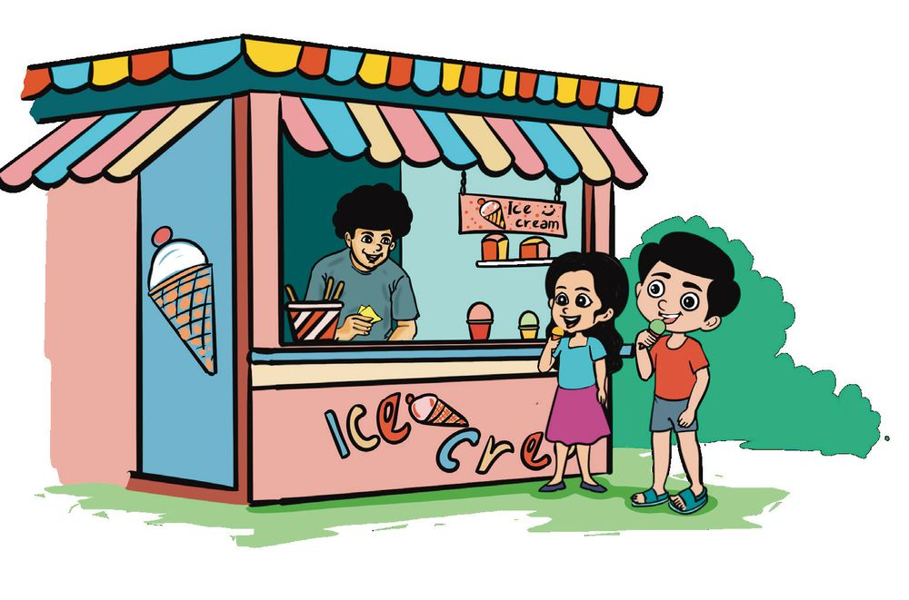

അവർ ഐസ്ക്രീം കടയിലെത്തി.
ഓരോോ ഐസ്ക്രീം വാങ്ങി. ഒന്നിന് 15 രൂപയാണ്. അനു മൂന്ന് നോോട്ടുകൾ കൊൊടുത്തു.
എത്ര രൂപയാണ് കൊൊടുത്തത്? ജിത്തു രണ്ട് നോോട്ടുകളാണ് കൊൊടുത്തത്. ഏതൊൊക്കെ നോോട്ടുകൾ കൊൊടുത്തപ്പോോൾ 15 രൂപയായി?
139
Page 44

140
Page 45
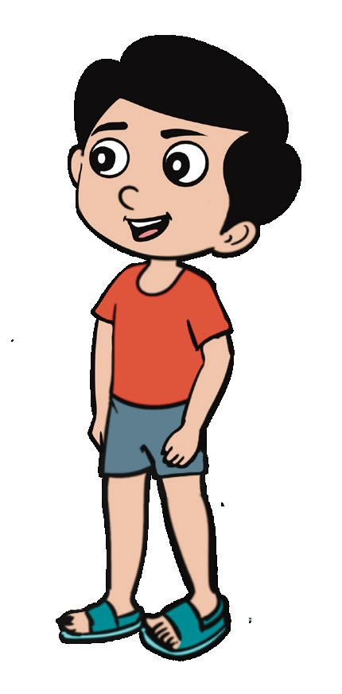
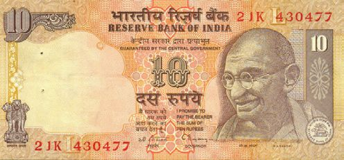

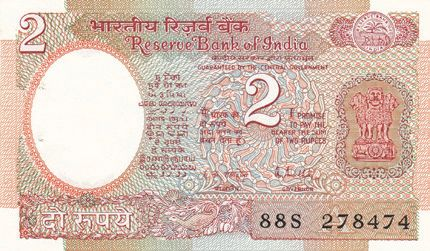
ആകാശത്തൊൊട്ടിലിൽ കയറിയാലോോ?
എനിക്ക് പേടിയാണ് എങ്കിലും വരാം
അനുവിന്റെ പേഴ്സിലെ നോോട്ടുകളാണ് ചുവടെ.
ആകാശത്തൊൊട്ടിലിൽ കയറാനുള്ള ടിക്കറ്റിന് ഈ തുക തികയുമോോ? ഇനി എത്ര രൂപ കൂടി വേണം?
രൂപ
തികയാതെ വന്നത് ജിത്തു കൊൊടുത്തു. ഏതൊൊക്കെ നാണയങ്ങൾ എത്ര എണ്ണം വീതമാണ് ജിത്തു കൊൊടുത്തത്? കണക്കാക്കൂ. 141
Page 46
ടിക്കറ്റ് കൗൗണ്ടർ
ഇരണ്ടാളുക്ക് ടിക്കറ്റ് വോോണു. എത്തര പൈസ ആയി ഇക്കു?
ങേ! എണ്ണ കൈയില് ഇരുപൊൊത് ഉരുപ്പിയേ ഉള.
രണ്ടാൾക്കുള്ള ടിക്കറ്റ് വേണം. എത്ര പൈസയായി എന്നാണ് ചോോദിച്ചത്.
അവളുടെ കൈയിൽ ഇരുപത് രൂപയേ ഉള്ളൂ.
അവർ നാലുപേരുംം ആകാശത്തൊൊട്ടിലിൽ കയറി. 142
Page 47

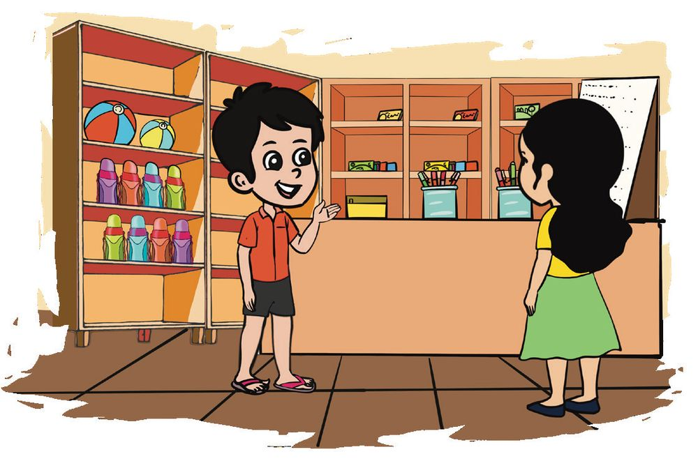
വില കണക്കാക്കാം
വില വിവരപ്പട്ടിക സാധനം വില ക്രയോോൺസ് 5 രൂപ വാട്ടർകളർ 10 രൂപ റബ്ബർ 2 രൂപ ആദിത്യയ കടയിൽ നിന്നും ക്രയോോൺസും വാട്ടർകളറുംം റബ്ബറുംം വാങ്ങി. മൂന്നിനും കൂടി ആകെ വില ? ആദിത്യയ ഏതൊൊക്കെ നോോട്ടുകളുംം നാണയങ്ങളുമാണ് കൊൊടുത്തത്? മനു ക്രയോോൺസും റബ്ബറുംം വാങ്ങി. ആകെ എത്ര രൂപ കൊൊടുക്കണം? ഏതൊൊക്കെ നാണയങ്ങളുംം നോോട്ടുകളുമാണ് കൊൊടുത്തത്? 143
Page 48

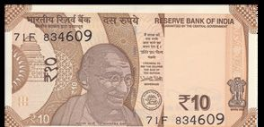
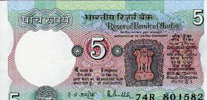
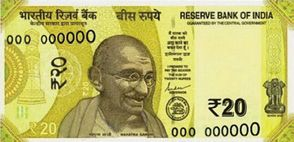
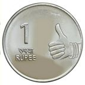
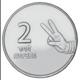
നാണയമാക്കാം. അനു, ജിത്തു, ആയിഷ, മുരുകൻ, തോോമസ് എന്നിവർ നോോട്ടുകൾ മാറ്റി നാണയങ്ങൾ എടുത്തു. ആരൊൊക്കെയാണ് ശരിയായ രീതിയിൽ നോോട്ടുകൾക്കു തുല്യയമായ നാണയങ്ങൾ എടുത്തത്? പേര് എഴുതൂ. 5
5
1
10
1
2
ആയിഷ
അനു 2
2
2 1
2
2
ജിത്തു 2 2
1 1
മുരുകൻ 1
144
2
5
1
5
1 2
2
തോോമസ് 1
2
2
Page 49
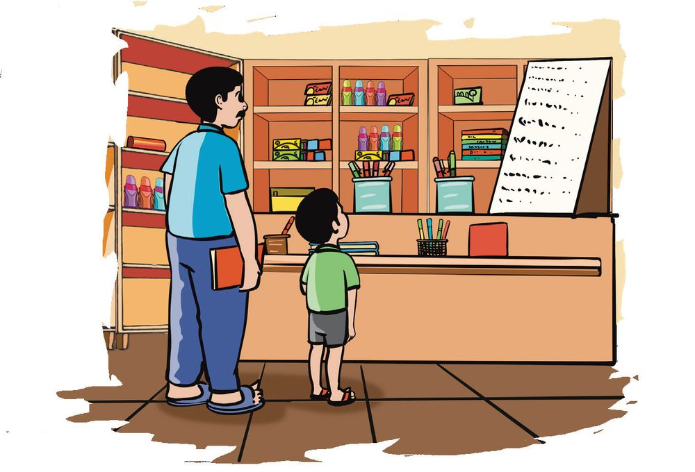
കടയിലേക്ക്.
വിലവിവരപ്പട്ടിക സാധനം വില പെൻസിൽ 5 രൂപ പേന 10 രൂപ നോോട്ട്ബുക്ക് 20 രൂപ
രൂപേഷും മകനും കൂടി കടയിലെത്തി. പെൻസിലും പേനയും വാങ്ങി. ആകെ എത്ര രൂപ കൊൊടുക്കണം?
ഒരു പെൻസിലിന്റെ വില
രൂപ
ഒരു പേനയുടെ വില
രൂപ
ഒരു പെൻസിലിനും ഒരു പേനയ്ക്കും കൂടിയുള്ള വില
രൂപ
രണ്ട് പെൻസിലിനും ഒരു പേനയ്ക്കും കൂടിയുള്ള വില
രൂപ
എങ്ങനെ കണക്കാക്കി, പറയൂ 145
Page 50

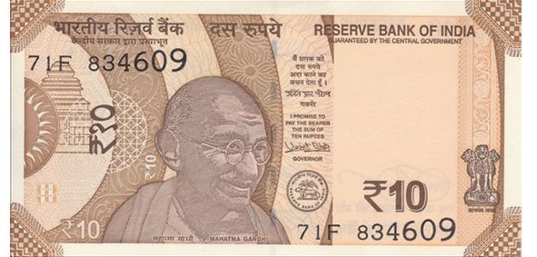
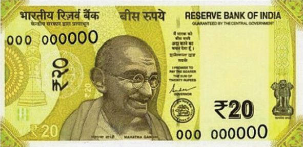
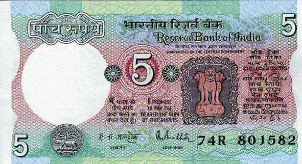
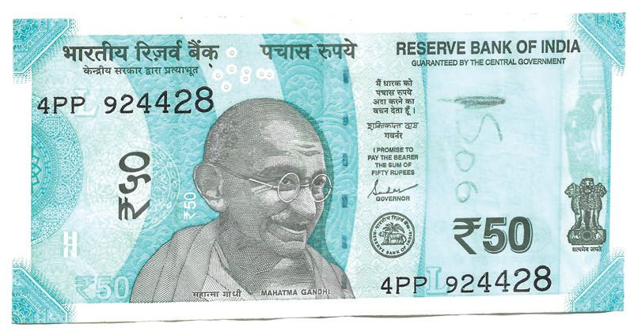

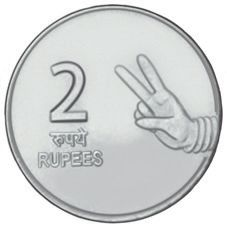
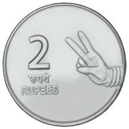

നാണയങ്ങളെ നോോട്ടുകളാക്കാം. ഓരോോ കൂട്ടം നാണയങ്ങൾക്കും തുല്യയമായ നോോട്ടുകൾ ഏതെന്നു കണ്ടെത്തൂ. അവ ചേർത്തു വരയ്ക്കൂ.
146
Page 51

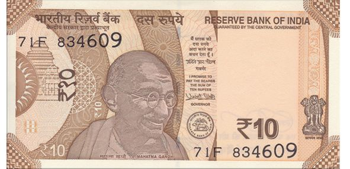
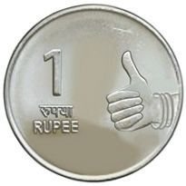


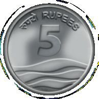
നാണയങ്ങൾ കൂട്ടാം.
മേരിയുടെ കൈയിൽ രൂപയുണ്ട് പതിനഞ്ച് രൂപ ആകാൻ ഏതൊൊക്കെ നാണയങ്ങൾ കൂടി വേണം?
ഏതൊൊക്കെ നാണയങ്ങൾ എടുത്താൽ 20 രൂപയാക്കാം? പല രീതികൾ പറയാമോോ?
147
Page 52

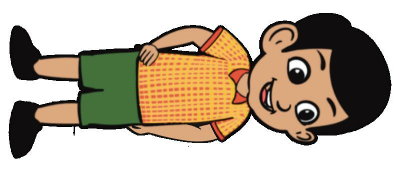
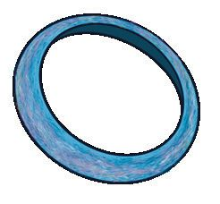
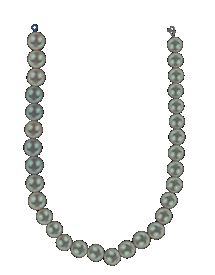
എത്ര നാണയങ്ങൾ?
10 രൂപ
6 രൂപ
7 രൂപ
പീപ്പി വാങ്ങാൻ എന്റെ കൈയിൽ ഉള്ള നാണയം 3 എണ്ണം വേണം.
എന്റെ കൈയിലുള്ള നാണയം 2 എണ്ണം കൊൊടുത്താൽ വള വാങ്ങാം. ഏതു നാണയം?
ഏതു നാണയം?
എന്റെ കൈയിൽ 2 നാണയം ഉണ്ട്. അതു കൊൊടുത്താൽ മാല വാങ്ങാം. 148
ഏതൊൊക്കെ നാണയങ്ങൾ?
Page 53

സ്നേഹക്കുടുക്ക ക്ലാസ്മുറിയിലെ സ്നേഹക്കുടുക്ക തുറന്നു. ജിത്തു നാണയങ്ങൾ തരം തിരിച്ചു. നാണയങ്ങൾ തരംതിരിച്ച് എണ്ണിയാലോോ?
ആകെ എത്ര രൂപ ഉണ്ടാകും?
ആകെ എത്ര രൂപ?
എണ്ണം രൂപ
1 രൂപ നാണയങ്ങൾ
8
2 രൂപ നാണയങ്ങൾ
10
5 രൂപ നാണയങ്ങൾ
4
10 രൂപ നാണയങ്ങൾ
5
100 രൂപ
കാണുമോോ?
4 അഞ്ച് രൂപയ്ക്കു
പകരം 2 പത്ത് രൂപ തരാം.
നാണയങ്ങളെ 10 രൂപയുടെ കൂട്ടങ്ങളാക്കി വച്ചു. ബാക്കിയുള്ളവ ഒരു കൂട്ടമായും. എത്ര കൂട്ടം? എത്ര രൂപ? ബാക്കിയുള്ളത് എത്ര രൂപ? എങ്ങനെ കണക്കാക്കി? പറയൂ.
149